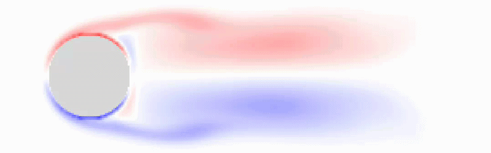

About Me
Aerospace and Mechatronics Engineer working at the intersection of physics and computation, combining advanced simulation techniques and numerical methods to measure the measurands and applying design thinking to develop and innovate complex engineering systems.
CFD
ANSYS Fluent
SU2
Gmsh
Stress Analysis
Abaqus
HyperMesh
SimSolid
Programming
Python
Fortran
C / C++
Mechanical Design
CATIA V5
SolidWorks
FreeCAD
Portfolio
Fuselage Structural Analysis — Conceptual Aircraft
Complete structural sizing and FEA validation of a commercial fuselage under internal pressure, bending, and floor loading — validated across three Abaqus load cases.

Project Overview
CATIA · Abaqus · SpaceClaim · Python
Complete structural design and FEA validation of a commercial aircraft fuselage optimised for high-altitude operations at Aspen-Pitkin County Airport (~7,800 ft elevation). The fuselage — 38.4 m long, 3.35 m diameter — was analytically sized using semi-monocoque theory, then validated in Abaqus under three operational load cases.
Bending governs the skin thickness at 3.12 mm versus 1.26 mm from internal pressure. Material selection covered 8 aerospace aluminium alloys across 32+ FEA combinations; a mixed-material approach (skin, frames, stringers each independently optimised) outperformed any single-alloy system — demonstrating that system-level structural performance is not simply additive.
- Analytical sizing via Arandara–Howe semi-monocoque theory: 39 Z-stringers, 76 ring frames, 3.12 mm governing skin thickness.
- Material selection: AA 2090-T83 skin (lowest density, 2,580 kg/m³), AA 7075-T6 ring frames (503 MPa yield), AA 2195-T8 stringers (560 MPa yield).
- Bending governs: stringers reach 448 MPa — 80% yield utilisation with 13.56 mm peak deformation; internal pressure case at just 15.8% utilisation.
- Floor loading case: 11.94 mm floor-centre deflection with skin and ring frames well within safe operating limits across all scenarios.
Lattice Boltzmann Fluid Simulation
Python-based LBM solver simulating vortex shedding and wake formation around a cylindrical obstacle using the D2Q9 Lattice Boltzmann Method.

Project Overview
Lattice Boltzmann Method · Python · D2Q9
A Python implementation of the Lattice Boltzmann Method (LBM) simulating fluid flow through a rectangular channel containing a cylindrical obstacle. The simulation captures the onset and development of Von Kármán vortex street patterns — a classical benchmark in computational fluid dynamics.
The D2Q9 scheme is employed: a two-dimensional nine-velocity lattice where each node tracks particle distribution functions in one stationary, four orthogonal, and four diagonal directions. The BGK collision operator relaxes distributions toward local equilibrium at a rate governed by the relaxation parameter τ, directly controlling the fluid kinematic viscosity. The cylindrical obstacle is defined by a boolean mask; bounce-back boundary conditions at its surface enforce the no-slip condition without the need for explicit pressure-velocity solvers.
- 400 × 100 node grid; cylindrical obstacle defined as a boolean mask with bounce-back boundary conditions.
- Relaxation parameter τ = 0.6 controls kinematic viscosity; baseline density ρ₀ = 100 across 9 velocity directions.
- Each timestep: stream distributions to neighbours → bounce-back on cylinder → BGK collision → recover macroscopic velocity and density from distribution moments.
- Animated output captures the full transition from symmetric steady-state flow to periodic vortex shedding (Von Kármán street).
2D Linear Convection Simulation
Fortran-based numerical simulation solving the 2D linear convection equation using the first-order upwind finite difference scheme.

Project Overview
Fortran · Finite Difference · First-Order Upwind Scheme
A Fortran program solving the two-dimensional linear convection equation using the first-order upwind finite difference scheme. The simulation tracks the transport of a scalar quantity u — representing temperature or concentration — advected by a uniform velocity field (c, c) across a square spatial domain.
The upwind scheme selects spatial derivatives from the upwind side of each node, ensuring numerical stability. The governing equation ∂u/∂t + c∂u/∂x + c∂u/∂y = 0 is discretised explicitly, advancing the field through 50 time steps. The final state is written to a text file for post-processing and visualisation in Python or MATLAB.
- 21 × 21 grid over [0, 2] × [0, 2]; grid spacing Δx = Δy = 0.1; 50 time steps at Δt = 0.01.
- Initial condition: uniform background u = 1.0 with a top-hat square pulse (u = 2.0) in the region x, y ∈ [0.5, 1.0].
- Courant number C = 0.1 — well within the CFL stability limit of C ≤ 1; Dirichlet boundary conditions maintained throughout.
- Final field written to resu.txt; Python post-processing script generates plots of the convected scalar field.
Porous Aerofoil — Aerodynamic Performance Study
Numerical study comparing porous and solid NACA 0012 aerofoils across Re = 2,000–200,000, achieving lift improvements up to 168% and drag reductions up to 93% at optimal Reynolds numbers.

Project Overview
ANSYS Fluent · Python · NACA 0012 · Darcy Porosity Model
A numerical investigation comparing porous and solid NACA 0012 aerofoils across Re = 2,000–200,000, targeting UAV and drone applications. Inspired by bird feather porosity for quieter, more efficient flight, porosity is modelled via Darcy's law as a momentum source term in the incompressible Navier–Stokes equations in ANSYS Fluent.
Because the porous surface is treated as an interior interface rather than a solid wall, standard Fluent force reports are unavailable. A custom control-volume (CV) momentum balance tool was developed in Python — integrating convective, pressure, and viscous contributions across a rectangular far-field boundary and rotating the resultant by angle of attack to yield lift and drag.
- CL gains of 57–75% at Re = 2,000, 100–168% at Re = 20,000, and 33–37% at Re = 200,000 vs. the solid aerofoil (AOA 1°–4°); peak efficiency at Re ≈ 80,000 (CL ≈ 1.005).
- Drag reduction reaches −93% at Re = 20,000 and −73% at Re = 200,000 at low angles of attack.
- Pressure contours show a broader low-pressure footprint on the suction side and stronger pressure beneath the nose — the mechanism behind the porous lift gain.
- In-house CV post-processing tool applies steady integral momentum balance (convective + pressure + viscous) with mass-flow imbalance check to verify conservation before accepting results.
GNN Geometry Detector — B-Rep Part Classification
Graph neural network that classifies mechanical CAD parts — bolts, nuts, flanges, pressure vessels — directly from STEP-file B-Rep topology, with no manual labeling or template matching.

Project Overview
GraphSAGE · OCP / build123d · PySide6 · Python
A B-Rep (Boundary Representation) part-recognition system for mechanical CAD components. Given a solid extracted from a STEP file, the pipeline classifies it into one of four standard part categories — bolt, nut, flange, or pressure vessel — purely from its topology and geometry.
Each solid is walked face-by-face and serialized into a normalized token string (surface type, area ratio, centroid, normal, and face-adjacency), which is parsed directly into a graph — faces as nodes, shared edges as adjacency — and classified with a 3-layer GraphSAGE stack. A parallel approach fine-tuned an 8B-parameter LLM (Llama-3.1, LoRA) on the same flattened topology text; the GNN matched its accuracy at a fraction of the parameters and compute, since the graph structure is given directly rather than inferred from a token sequence.
- Trained on 1,742 labeled STEP-derived examples across bolts, nuts, flanges, and pressure vessels.
- Approach 1 — BREPLLM: LoRA fine-tune (r=16, alpha=16) of a 4-bit quantized Llama-3.1-8B on serialized topology text via SFTTrainer.
- Approach 2 — GNN: 3-layer GraphSAGE with batch norm and mean+max pooling, trained end-to-end on the face-adjacency graph in minutes on a free-tier GPU.
- The GNN backend powers
sample.py, an interactive PySide6 3D viewer that loads multi-body STEP assemblies and classifies each part live, with no network call or LLM server.
MPU-6050 Arduino I2C Reader
Library-free 6-axis IMU reader for the MPU-6050, accessing hardware registers directly over I2C to stream real-time accelerometer and gyroscope data.

Project Overview
Arduino · I2C · MPU-6050 · C++
A lightweight, library-free implementation for reading 6-axis inertial data from the MPU-6050 IMU over I2C on Arduino. By directly accessing hardware registers via the Wire library — bypassing heavy sensor libraries — the code achieves a minimal footprint well suited to resource-constrained embedded applications.
The MPU-6050 is woken from sleep by writing to the power management register (0x6B), then configured for ±2g accelerometer and ±250°/s gyroscope ranges. Raw 16-bit values from the measurement registers (0x3B–0x48) are burst-read and scaled to engineering units using the datasheet sensitivity constants. Real-time motion data is streamed to the Serial Monitor at 9600 baud.
- Direct I2C register access — no external libraries: power management, configuration, and measurement registers addressed explicitly via Wire.
- Accelerometer ±2g at 16,384 LSB/g sensitivity; gyroscope ±250°/s at 131 LSB/°/s.
- Wiring: SCL → A5, SDA → A4, AD0 → GND (I2C address 0x68) — compatible with Arduino Uno, Nano, and Mini.
- Real-time accelerometer G-force and gyroscope angular rate across all 3 axes streamed live to Serial Monitor at 9600 baud.